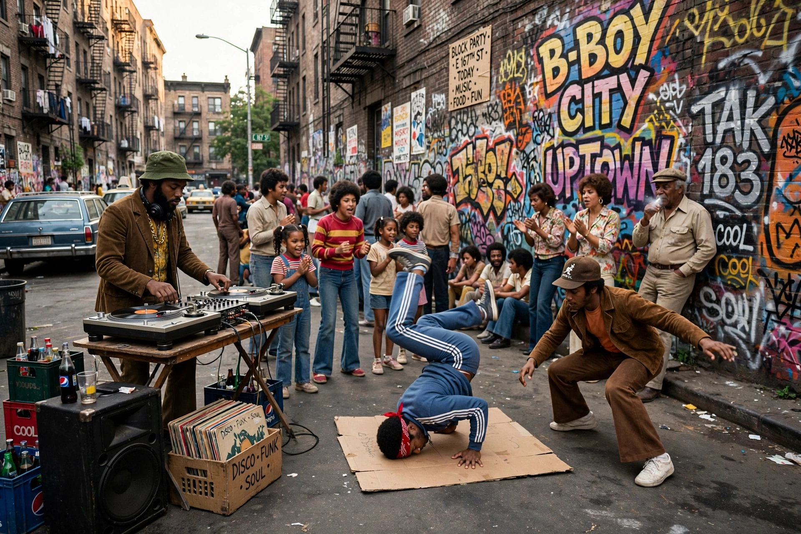

| Hip hop | |
|---|---|
| Origin | The Bronx, New York City, 1970s |
| Symbolic founding | 11 August 1973, DJ Kool Herc's party at 1520 Sedgwick Avenue |
| Elements | MCing (rap), DJing, breakdancing (b-boying), graffiti art |
| Pioneers | DJ Kool Herc, Afrika Bambaataa, Grandmaster Flash |
Hip hop (also styled hip-hop) is a cultural movement and musical genre that emerged in the Bronx borough of New York City in the 1970s, created by African American, Latino, and Caribbean American youth. It encompasses four principal elements identified by pioneer Afrika Bambaataa: MCing (rapping), DJing, breakdancing, and graffiti art — with "knowledge" sometimes counted as a fifth element.
The movement's symbolic founding is a party on 11 August 1973 at 1520 Sedgwick Avenue in the Bronx, where Jamaican-born DJ Kool Herc used two turntables to extend the drum "breaks" of funk records while his friend Coke La Rock hyped the crowd — the seeds of breakdancing and rap. Grandmaster Flash refined DJ technique with quick-mix theory and scratching, and Afrika Bambaataa's Zulu Nation gave the culture its name and philosophy.
"Rapper's Delight" by the Sugarhill Gang (1979) brought rap to the charts; Grandmaster Flash and the Furious Five's "The Message" (1982) added social commentary. The mid-1980s to early 1990s "golden age" produced Run-DMC, LL Cool J, the Beastie Boys, Public Enemy, De La Soul, and A Tribe Called Quest, alongside the rise of West Coast gangsta rap with N.W.A and later Tupac Shakur and the Notorious B.I.G., whose rivalry ended in both men's murders in 1996–97.
By the 2010s hip hop had become the most-consumed music genre in the United States and a worldwide cultural force, shaping fashion, language, and politics. Artists such as Jay-Z, Eminem, Kanye West, Nicki Minaj, Drake, and Kendrick Lamar — who in 2018 became the first popular musician to win the Pulitzer Prize for Music — defined its commercial and artistic peaks, while regional scenes from Atlanta trap to UK grime and Korean hip hop extended its reach.
See also: Hip hop music, Rapping, Breakdancing